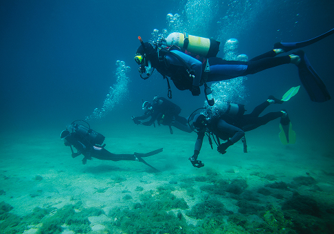
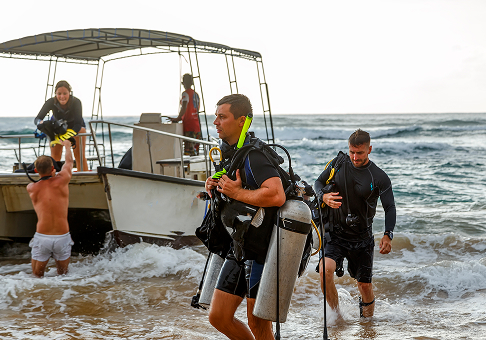

Über uns
Forget the surface.
Gili Air ist noch immer ein Geheimtipp: Die kleine Insel sei wie Bali vor zwanzig Jahren, sagen die einen, sie sei einzigartig, sagen die anderen. „Sie ist mein Zuhause“, sagt unsere Betty.
Vor fünfundzwanzig Jahren kam Bettina Beckmann selbst als Tauchschülerin nach Gili Air und hat sich sofort in diese Insel verliebt: In die weiten, weißen Sandstrände, das türkisblaue Wasser und die autofreien Straßen. Sie wusste gleich: Hier mache ich eines Tages meine eigene Tauchschule auf. Dabei war es ihr von Anfang an wichtig, nicht nur eine Schule zu gründen, sondern vor allem einen Ort der Begegnung.
Gili Air – Paradies für Taucher
Auf Gili Air gibt es kein einziges Auto, nicht einmal ein Moped. Nur Pferdekutschen, Fahrräder und E-Roller begegnen dir auf den naturbelassenen Wegen. In zwei Stunden hast du die Insel umrundet – und dabei den Ausblick auf atemberaubend weiße Sandstrände und türkisblaues Wasser genossen. Am Strand findest du zahlreiche gemütliche Strandlokale und im Inselinneren ein traditionelles Dorf mit einer Moschee.


Bettina Beckmann und ihr Team
Neben Betty bieten insgesamt fünf Tauchlehrerinnen und -lehrer ihre Kurse auf Deutsch, Englisch, Spanisch und Französisch an. Und Fortgeschrittene können spannende Ausflüge zu atemberaubenden Spots buchen – sprecht uns einfach an!